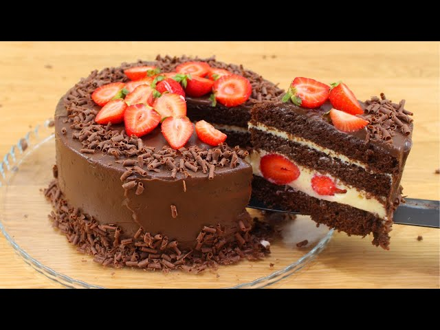

Bem-vindos à doceria do JB, Aqui você encontra uma variedade de doces deliciosos, feitos com ingredientes de alta qualidade e muito carinho. Explore nosso catálogo e encontre o doce perfeito para você.

Bolo de Chocolate
R$ 88,80
Ingredientes:
- 5 ovos
- 1 e 3/4 de xícaras (chá) de faarinha de trigo sem fermento
- 1 lata de leite condesado
- 1 colher(sopa) de margarina
- 1 caixa de morango
- 2 xícaras(chá) de açúcar
- 1/2 xícara(chá)de chocolate em pó
- 1 colher(sopa) de fermento
- 2 colheres (sopa) de leite em pó
- 1 e 1/2 lata de creme de leite
- 400 gramas de chocolate em barra
Instruções:
- separe as 5 claras das 5 gemas,bata na batadeira as claras até obter ponto de neve.
- acrescente as 5 gemas e continue batendo,
- acrescente o açúcar e misture bem.
- Em uma tigela separada, misture a farinha, o chocolate, o fermento, o bicarbonato e o sal.
- Adicione os ingredientes secos à massa, alternando com o leite, começando e terminando com os ingredientes secos.
- Bata até incorporar tudo.
- Despeje a massa na forma preparada.
- Asse por 30-35 minutos, ou até que um palito inserido no centro saia limpo.
- Deixe esfriar na forma por 10 minutos antes de desenformar.
- Decore a gosto e aproveite!